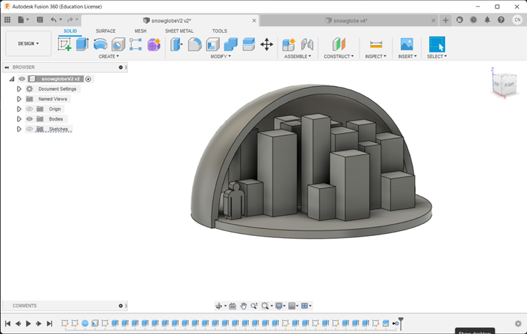
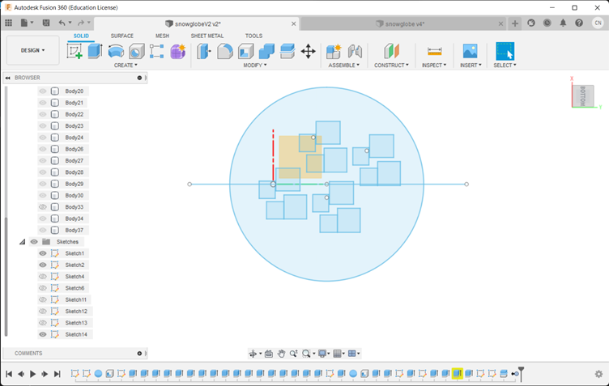
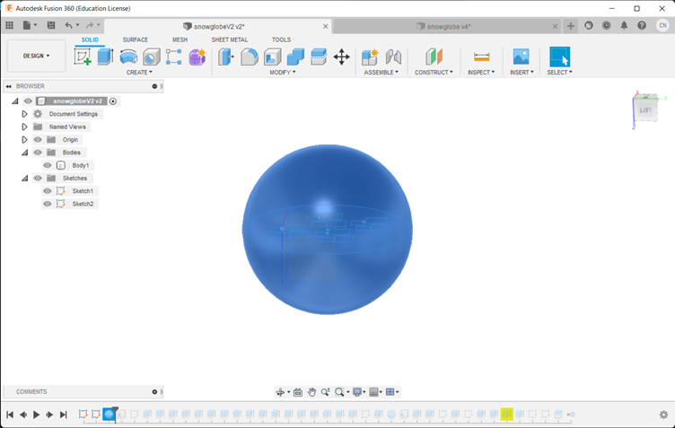
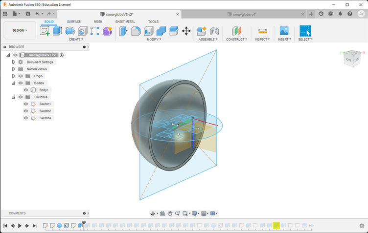
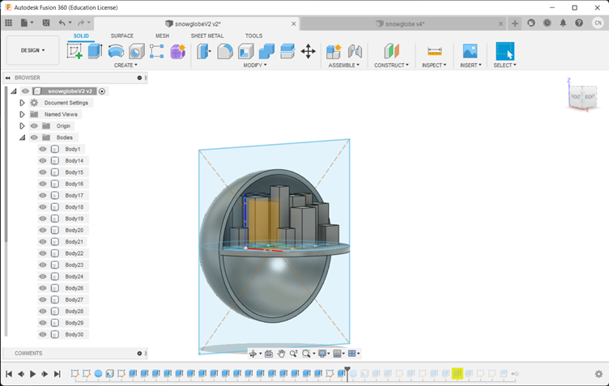
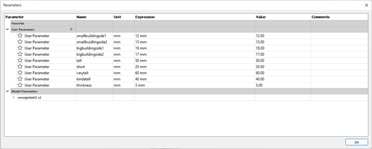

My 3D printing project
For the personal assignment, I made a snowglobe!
This design tries to showcase the benefits of 3D printing.
If you look closely at the design, you will see that some of the buildings at the back of the final snowglobe design cannot be reached by subtractive manufacturing.
Steps:
Create a sketch.
To start off, I drew a circle and a few squares to be the dome and buildings respectively.
Extrude and Shell
I then extruded the dome into a sphere and used the shell function to make it hollow.
Split
I used the split function to "open" the dome so that I would be able to see the buildings and dome at the same time.
Extrude
Select the plane of the buildings. I then used parameters to extrude the "buildings" as well as the base.
Here are the parameters I used:
I also added a little person inside the snowglobe by sketching the shape and then extruding it.
Tip
Make full use of the hide/unhide function of fusion 360 so that you can see inside the shell of the globe.